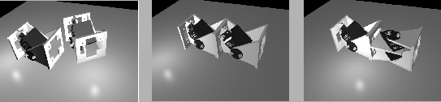
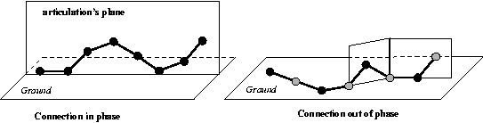

Next: 3 Locomotion Up: Locomotion of a Modular Previous: 1 Introduction
The current version of the prototype is a chain of 8 similar linked
modules called Y1. In figure ![[*]](crossref.png) , a CAD rendering
is showed. They have just one degree of freedom, actuated by a Futaba
3003 RC servo. The design is based on generation G1 Polybot modules[4].
In this first version, no sensors are included. Our main interest
was focused on the study of locomotion, and its implementation on
FPGA.
, a CAD rendering
is showed. They have just one degree of freedom, actuated by a Futaba
3003 RC servo. The design is based on generation G1 Polybot modules[4].
In this first version, no sensors are included. Our main interest
was focused on the study of locomotion, and its implementation on
FPGA.
|
 |
Y1 modules are simple and cheap: it is very easy to build prototypes
of worm-like robots with them. These modules can be connected in two
different ways, as shown in figure . One way
is the connection in phase, in which two adjacent modules have the
same orientation. Robots constructed using this link have all the
articulations in the same plane, perpendicular to the ground (figure
). Cube comprises 8 Y1 modules, connected
in phase, so that it can only move along a line, forward or backwards.
|
 |
The other way of connecting the modules is out of phase. Two adjacent
modules are rotated 90 degrees one to each other, obtaining two degrees
of freedom. One articulation moves on the ground plane (yaw) and the
other does perpendicularly (pitch). The right image of figure
shows a worm with this kind of links. Black circles represent articulations
that moves on the ground plane and grey circles represents articulations
that moves perpendicular. This kind of robot can turn and move on
different directions, not just in straight line.
The dimensions of each module, in its initial position (0 degrees angle), are 52 x 52 x 72mm, and the weight is 50gr. They are made out of PVC. The rotations range is between -90 and 90 degrees. The robot is 576mm in length and 400gr in weight. The electronic and power supply are located off-board.
The consumption depends on the gaits, but typically it is 200mA per servo, giving a total of 1.6A. All the locomotion experiment at this first stage are realized using an off-board power supply.
Juan Gonzalez 2004-10-08